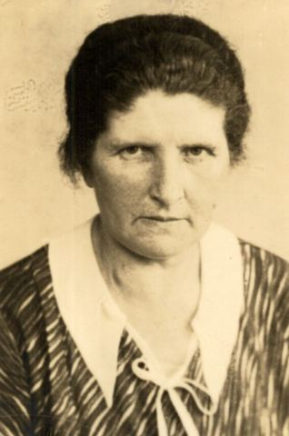
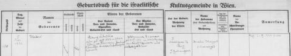
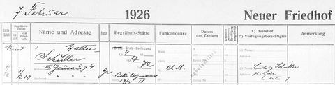
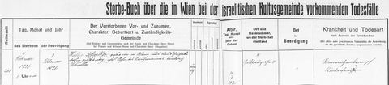
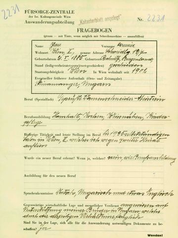
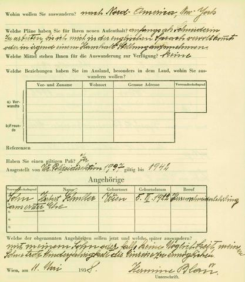
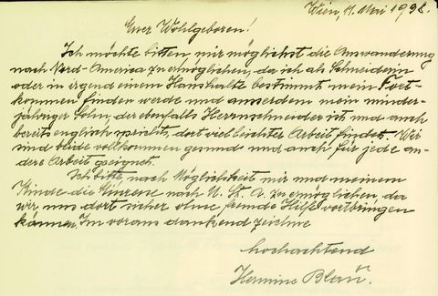

Hermine Oszman
1885–1944
Life events
| Born | 21 Jan 1885 · Rechnitz, Koszeg, Vas, Hungary Map |
|---|---|
| Married | 21 Mar 1920 · Stadttempel, 1010, Seitenstettengasse 4, Vienna, Austria Map |
| Married | 3 Nov 1930 · Richard Blau · 1060 Schmalzhofgasse 3, Vienna, Austria Map |
| Divorced | 5 Apr 1933 · Richard Blau · Vienna, Austria Map |
| Lived | |
| Deportation | |
| Died | about 15 Jan 1944 · Auschwitz Death Camp, Oswiecim, Malopolskie, Poland Map · Murdered by Nazis in the Holocaust |
| Deportation | 15 Jan 1944 · Caserne Dossin (Malines-Mechelen) Concentration Camp, Mechelen, Antwerpen, Belgium Map · Deported on Transport XXIII to Auschwitz Birkenau, Extermination Camp, Poland on Prisoner # in Transport 223 |
Family
Hermine Oszman1885–1944

Richard Blau1888–1943
Photos
Hermine Oszman

Hermine Oszman

Hermine Oszman

Hermine Oszman

Hermine Oszman

Hermine Oszman

Hermine Oszman
Hermine Oszman
Hermine Oszman